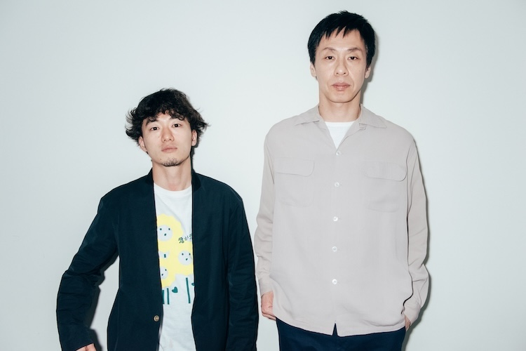
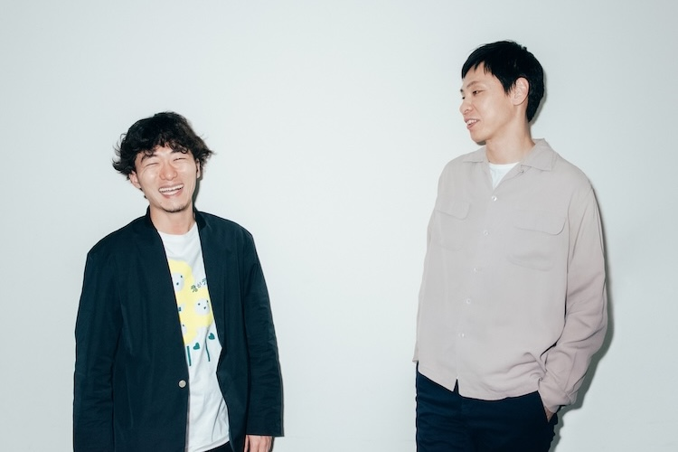
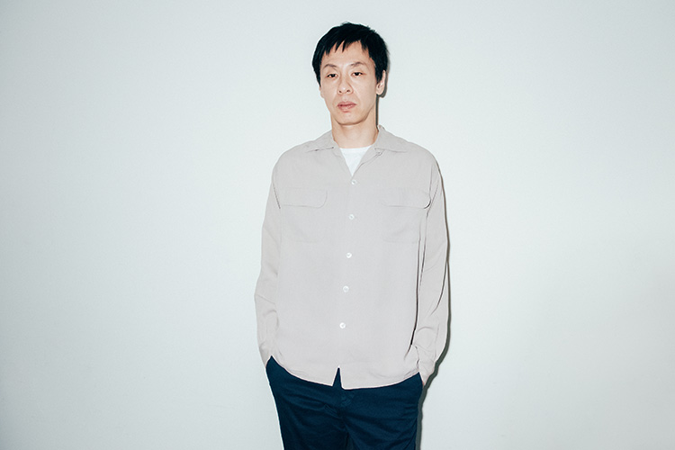

世界が注目する女優、キム・コッピをヒロインに迎えた、松居大悟監督の最新作『君が君で君だ』が公開される。男3人の奇妙で異色な10年間の愛の顛末を描く本作は、「演劇」を新しい手法によって表現した前作『アイスと雨音』から転じて、自身の劇団、ゴジゲンの延長線上と語るように、その世界観そのものに「演劇」の脈動を感じ取れる作品。尾崎豊になりきる男を演じる池松壮亮、ブラッド・ピットになりきる男を演じる満島真之介と並んで、坂本龍馬になりきる男役を納得の存在感で演じる性格派俳優、大倉孝二が制作過程で感じたという、腑に落ちなかったこと、捉えきれなかったことを経て完成した本作について、演劇という共通言語を持つ松居監督と共に語る。
監督は自分のみっともなくて恥ずかしい部分を隠さずに見せているんだけど、第三者が見るとコメディに見えることもある。（大倉）
演劇が出自にある松居監督にとって、大倉さんは演劇界の先輩にあたるわけですけど、事前に持っていたお互いの印象はどんなものでしたか？
松居：
面識は無くて、僕の方が一方的に見ていた側ですね。ナイロン100℃の舞台はもちろん、一人の客として、出演されている映画やドラマでの大倉さんのお芝居をずっと見ていたので。
大倉：
僕は松居監督の劇団の公演も演出した映像作品もまだ一度も観たことがなかったし、今回の仕事が本当に初対面で。出演が決まってから映像作品を観ましたけど。
松居：
え、観たんですか？
大倉：
そりゃ、何本かは観ましたよ。普段、自分以外の舞台も映画もドラマも観ない人間なので、特別、松居監督の作品だけを避けて観なかったということではもちろんないですよ。
松居：
ありがとうございます（笑）
松居監督の過去作を観て、どのような印象を持ちましたか？
大倉：
やっぱり映画特有のお芝居じゃないみたいなお芝居が多いから、自分にこういうこと出来るかなってドキドキ感はありましたよね。
松居：
そうなんですか。
ナチュラルな演技に苦手意識があったんでしょうか？
大倉：
ナチュラルとは何かが分からないですけど、観ていて明らかに自分には出来ないタイプのやつだなって思うんです。どこまでが芝居なんだろうって。
松居：
なるほど、そう見えるんですね。
大倉：
『アズミ・ハルコは行方不明』（2016）を観ながら、俺にこれが出来っかなぁ、みたいに思ったりしていました。
この映画の情報が解禁された際に、出演者のコメントが出されたと思うんですけど、大倉さんの率直なコメントに撮影現場への興味が膨らみました。コメントに「腑に落ちないこと、捉えきれないこと」とありましたけど、それはどのような点だったんでしょう？
大倉：
やっぱり役者ですから、監督が何をやりたいのか、この役はどうあるべきか理解しようとして台本を読むんですよ。でも読んでもそれが全く分からなかったんです。
松居：
（笑）
それは、個人として登場人物達に共感できなかったという意味ですか？
大倉：
そうですね。自分の中に無かったというか、劇中の３人がどうしてこういうことになるのか分からなかった。で、その答えを求めたんですけど、監督は理論立てて説明するのがどうやら得意ではない人だったみたいで（笑）
松居：
ははは（苦笑）
大倉：
でも、やりたいって熱量があればそれだけでいいじゃないかと思わせてくれる何かは確実にあったんです。松居監督含め、この映画のスタッフとキャスト全員より僕は明らかに一世代くらい上なわけで、そこへ飛び込んでいって、同じノリになれるかっていう不安も正直あったので、そういうことを監督に伝えたら、「むしろ大倉さんが率先して飛び込んできてほしい」と。なるほど、じゃあ自分にやれることはそれしかないな、と思ったんです。だから、理解しようだとかは置いておいて、熱量高くそこにいようと決めました。
大倉さんはこれまで、自身より若い監督や演出家の方と仕事をされることってあまりないですよね？
大倉：
すごく少ないんです。自分よりも若い監督と仕事をするというのは求めていたことの一つだったので、それも出演を決めた要因でした。
演劇ファンとしては、松居監督の映画に大倉さんが出演することは一つの楽しみでもあると思いますが、これは松居監督からのオファーだったんですか？
松居：
もちろんです。役としても、尾崎（池松壮亮）とブラピ（満島真之介）よりも世代が上の役だったのと、演劇という共通言語があるという信頼はもちろんあったし、単純に憧れの気持ちもありました。撮影前の全員での読み合わせの直後に、1対1で会って、この作品は劇団で表現していたことを映画で初めてやろうという挑戦で内容は理解されにくいかもしれないけど、このメンバーで挑みたいと話したら、大倉さんは「やってみます」と答えてくれて。

『愛するというのは気持ちを伝えることじゃなくて、その人自身になることだ』という真理を見つけたって確信して書いたんです。（松居）
松居監督の前作『アイスと雨音』は「演劇」という題材を新しい手法で表現していましたけど、この映画は設定や世界観に「演劇」を感じます。原点回帰にも取れるこの作品を何故、いま選んだんでしょうか？
松居：
これは自分が一番辛い頃に書いていたものなんです。劇団が活動休止する直前で、誰も信用出来なくて自分が一番正しいと思い込んでいた時期で、「愛するというのは気持ちを伝えることじゃなくて、その人自身になることだ」という真理を見つけたって自分の中で確信して書いたんです。当時は酒を呑まないと稽古もできないくらいの精神状態だったんですけど、描こうとしていたテーマ自体は今でも変わらず愛おしくて。当時はとにかく周りの声に耳を塞いでいたので客観的に伝わりづらいものになっていて、映画の撮影や再始動した劇団の活動を通して、周囲に耳を傾けながら皆で作りあげることを大事にしている今だからこそ、敢えてこの話をやりたいと思ったんです。
先ほど、大倉さんが共感できなかったと話されていたものが、松居監督の中では、隠したいくらいの本心になるわけですよね。
松居：
本心であり、憧れですね。ここまで人を愛することって出来ないので。
大倉：
初期の段階でお話しした時に、松居監督に「この登場人物達の気持ちって分かりません？」って聞かれたんです。二つ返事で「分かりません」って（笑）
松居：
（笑）
大倉：
でも分かっても分からなくてもそこは別にいいんじゃないかなと思うんです。僕、そういうところがあるんですよ。
ある種のストーカー行為が発展していく話の中で、池松さんの演じた尾崎が格段に振り切っているのに対して、大倉さんと満島さんの演じた２人は常軌を取り戻す瞬間も垣間見える役柄ですが、その辺りの演じ分けはありましたか？
大倉：
むしろ、冷静さが出てしまう役の方が難しいと思いましたね。突っ走る役の方がやりやすいのかもしれないって。いや、やりやすいは言い過ぎかな…。でも僕の中ではそっちの方が難しかったのは確かです。狂っている世界の中で少しでも冷静になる瞬間があると、逃げていきそうになるんですよ。
松居：
撮影していた環境のせいもありますよね。７月の真っ只中に、天井の薄いアパートの狭い部屋にキャストもスタッフが集まって、汗ビシャビシャになりながら、さらに大倉さんは着物という誰よりも厚着の上に首に鎖を巻かれた状態でしたから（笑）
大倉：
本当に暑かった（笑）
常軌を逸した人達を描く演劇作品で言うと、例えばポツドールやTHE SHAMPOO HATの場合、よりリアルでエグい方向へいくと思うんですが、松居監督の作品はコメディ的な後味があるように思います。意図的ではないとしても、そう感じることはありますか？
松居：
それはたぶん系譜だと思います。ポツドールもSHAMPOO HATも自分より上の世代ですけど、僕は劇団で言うと、ヨーロッパ企画が師匠的なところがあって、僕は強い影響を受けていると思うので。
大倉：
台本を読んでいた時は分からなかったんですけど、出来たものを観て、「あ、これはコメディなんだ」って僕は思いましたね。人によってはコメディと思わない人がいてもいいと思うんですけど。
松居：
そうですね。そこは観る人によりますね。
大倉：
そう。あくまで僕はコメディでファンタジーだなって思いました、ということなんです。現場でも監督からは、常に惨めでみっともなくいてくれと言うことを何度も言われたんですけど、そこがコメディ感に繋がっているんじゃないかな。だから正面から描くのを逃げているって意味で言っているわけではないんです。監督は自分のみっともなくて恥ずかしい部分をちゃんと隠さずに見せているんだけど、それを第三者が見るとコメディに見えることもあるということ。決してコメディに逃がしているということではないんです。

気持ちを最後まで理解することが出来なかったことも経験。理屈抜きで仕事をするのは怖い。だからこそ、いい経験でした。（大倉）
尾崎は固執や執着はしているのに、ソンに対しての人間的な感情は希薄にも思えて、これはどういう種類の感情なんだろう、と捉えきれなさもあります。冒頭のカラオケでの出会いから、時間経過がありますけど、その間にどんな心境の移り変わりがあったんでしょう。
松居：
尾崎は単純に一目惚れをしたわけではなくて、一目惚れしたブラピの付き合いでやっていたはずが、いつのまにか、ブラピを追い越してしまう。そういうことって、誰しも起こり得るんじゃないかって考えが僕の中になんとなくあって。恋愛感情がエスカレートしておかしくなるみたいな単純な道筋じゃないものを描きたかった。洗脳じゃないですけど、それによって自分を捧げるという意味でも、宗教に近いものかもしれないです。
大倉さんは実際に演じたことで、登場人物を理解できましたか？
大倉：
いや、全然できないです。
松居：
（笑）
大倉：
徹頭徹尾、自分の中に何かを落とし込んでやるのではなく、書いていることをやってみるということに徹しましたから。それをどれだけの熱量で乗り切れるかというところですよね。
では、出来上がった作品を観られた後、共感できた部分はありました？
大倉：
う〜ん。この３人だけじゃなくて、高杉真宙君の演じたソンの彼氏や、向井理君とYOUさんの演じた借金取りの２人にも「なるほどね」って部分はありますね。ただ、理解は出来ないです。こういうやつらがいるんだなって。それでいいような気がするんですね。池松君が海に入って向日葵を食べるシーンがあるんですけど、それを遠くで見ながらYOUさんが「何をやってんの、全くコイツらは」みたいな感じで笑ってるじゃないですか。強いて言えば、あれが僕の視点に近いですね。
現場では、池松さんと満島さんと密な話し合いもあったんですか？
大倉：
ちゃんと椅子に座って、面と向かって議論を交わすということは無かったですね。映画の現場は長い時間をかけてリハーサルができるわけではない短期間の勝負なので、それぞれがやりたいことやイメージしているものをやってしまいがちだけど、劇中の３人は10年間一緒に暮らしていたわけでその感じを出すには意思の疎通は必要なので、意見は出し合いましたけど。
松居：
密室での撮影だったので、特に龍馬は鎖を首に繋いでいる状態でもあって、動線には気をつけましたけど、僕のいないところでも３人は話し合ってくれていたみたいです。リハーサルは読み合わせも含めて、1週間くらいかな。舞台の稽古に近い感じでしたね。
大倉：
でも実際、撮影したあの場に行かないと掴めないものはありましたね。
松居：
そうですね。条件に合う部屋を探すのは大変だったんですけど、とにかく撮影したアパートが死ぬほど暑くて。
大倉：
そう。撮影の過酷さがスクリーンに出てないのがちょっと悔しい。
松居：
（笑）
大倉：
ある意味、映画の内容よりも狂った世界だったかもしれない。アパートでの撮影が４日間続いた最後の日は正直、これは無理だと思いましたから。

大倉さんは自分より若い監督と仕事をしたかったと仰いましたが、この撮影を通して感じ得たものはありましたか？
大倉：
松居監督、池松君、真之介君はじめ、若い人達と仕事が出来たのはすごくいい経験になったと思います。こういうことがないと、どんどん狭くなってしまうので。舞台で例えると、劇団の中で突き詰めて切磋琢磨していく良さもある一方、それだけでは価値観は狭まっていくので。自分より年上のベテランの方と仕事をして学べることはもちろん沢山ありますけど、それだけでは駄目で。常に挑戦者でありたいけど、受け止める側もやってみないといけない。ただでさえ自分の能力には悲観しているのに、広がりがないなって。テレビの現場では、年齢が上がってくるとだんだん何も言われなくなってくるし、ちょっとでも修行しないといけないって気持ちはあります。今回、気持ちを最後まで理解することが出来なかったというのもある種の経験ですから。理屈抜きで仕事をするのは怖い。だからこそ、いい経験だったと思います。
それを受けて、松居監督からも最後に一言。
松居：
舞台や映画に限らず、またご一緒したいですね。大倉さんは最後まで理解できなかったと言われてはいますけど、この撮影を通して、共通言語も生まれた気がするので。登場人物を理解できないと聞いて、俯瞰した気持ちで入ったら浮いてしまうんじゃないかという恐れもあったんですけど、実際、現場では誰よりも中に入り込んできてくれたので。おかげで助けられました。